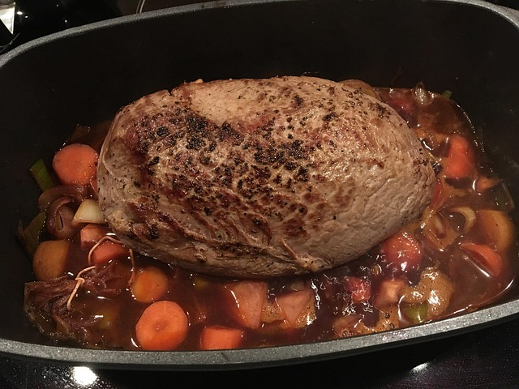

Klassischer Rinderbraten
 30 min
30 min
 normal
normal
 24.07.2025
24.07.2025
Zutaten für
| 1.5 | kg Rinderbraten |
| 4 | Knoblauchzehen |
| 3 | m. Große Zwiebeln |
| 130 | ml Rotwein, trockener |
| 250 | ml Rinderbrühe |
| Salz, Pfeffer | |
| Senf | |
| 2 | EL Öl |
Zubereitung
ca. 30 min
Gesamtzeit ca. 2 Std 30
min
Zuerst schneiden wir die Möhrchen, den Porree, die Zwiebeln, den Knoblauch und den Sellerie in kleine Stücke, (etwas kleiner als 1 cm Würfel, auch länglich, hauptsächlich klein), waschen sie und belassen sie in einer Schüssel.
Den Braten lassen wir etwas aufwärmen, sodass er nahe Zimmertemperatur hat (kaltes Fleisch scharf angebraten wird leicht zäh).
Den Ofen auf 180 °C Ober-/Unterhitze vorheizen.
Dann mischen wir etwas Senf mit einem Spritzer Sojasoße und schmieren den Braten rundherum damit ein (ich mach das immer mit der Rückseite eines Teelöffels). Dann salzen und pfeffern wir den eingeschmierten Braten kräftig. Nun lassen wir reichlich Olivenöl in einer Pfanne heiß werden und braten das Fleisch von allen Seiten scharf an.
Den Braten dann in einen Bräter und in den vorgeheizten Ofen geben, damit er die Temperatur behält. Wichtig: Ein Deckel draufgeben, damit das Fleisch nicht trocken wird.
In der Pfanne, in der wir den Braten angebraten haben, das Öl belassen und das Gemüse hinzugeben. Das Gemüse leicht anschmoren, einen EL Zucker drübergeben und leicht vermischen. Den Zucker leicht anrösten lassen (karamellisieren), dann mit dem Wein ablöschen und die Flüssigkeit etwas reduzieren lassen. Dann die Kräuter hinzugeben.
Einen halben Liter Wasser zum Kochen bringen und Rinderbrühepulver hineingeben.
Den Bräter mit dem Braten aus dem Ofen nehmen, das Gemüse mit dem Weinsud hinzugeben und die kochende Brühe über den Braten gießen. Ein Stück Butter oder Schweineschmalz hinzugeben. Den Deckel wieder auf den Bräter geben und zurück in den Ofen geben.
Nun 3 Stunden garen lassen und alle 40 Minuten den Braten im Bräter umdrehen oder reichlich mit dem Sud übergießen. Nach drei Stunden sollte er durch sein. Mit einem spitzen Gegenstand (Schaschlikspieß oder Zahnstocher) hineinpieksen. Geht er leicht rein bis zur Mitte, ist der Braten fertig, andernfalls nochmal 20 Minuten garen lassen und erneut testen.
Den Braten aus dem Bräter nehmen, in Alufolie einwickeln und in den ausgeschalteten Ofen zurück, damit er warm bleibt. Den Sud mit dem Gemüse pürieren und abschmecken (Wir haben noch nie nachwürzen müssen, außer etwas Cayennepfeffer vielleicht für mehr Feuer.)
Dazu empfehle ich Klöße und Rotkohl oder Rosenkohl.
Wer keinen Pürierstab hat und auch keinen Mixer, kann die Soße durch ein Sieb abgießen und mit Stärke oder Mehl, mit kaltem Wasser vorher verrührt, andicken. Leider geht so jedoch ein Großteil des Geschmacks verloren, da wir das Gemüse so nicht in der Soße haben. Lecker ist es dennoch, da der Braten viel Geschmack abgibt.
Erstellt von

Noureddin